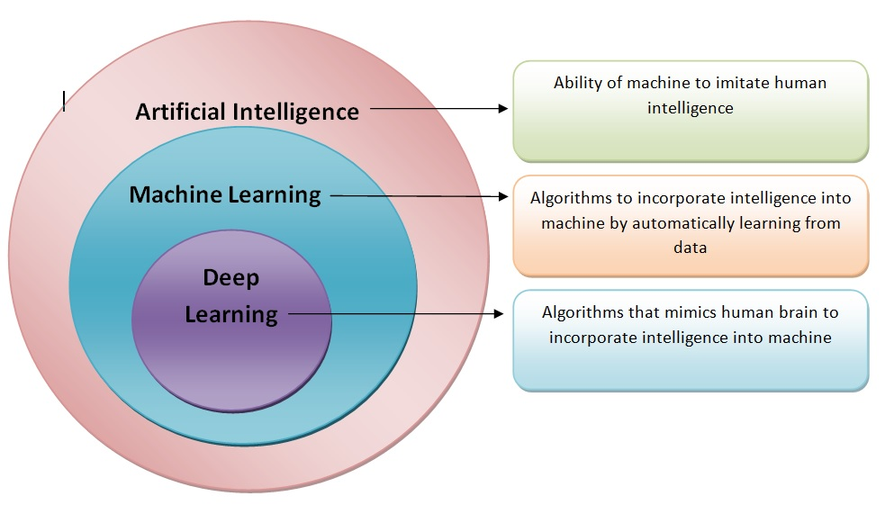
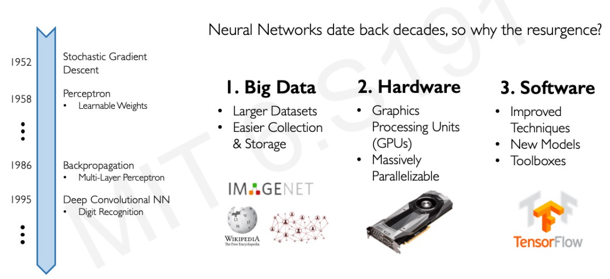
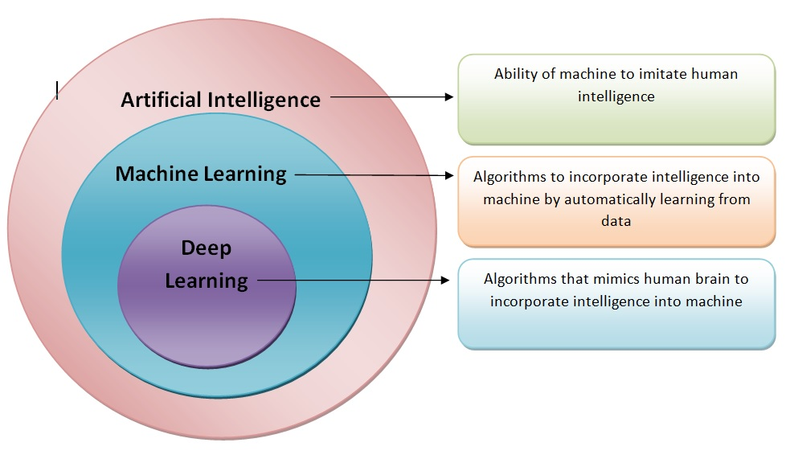
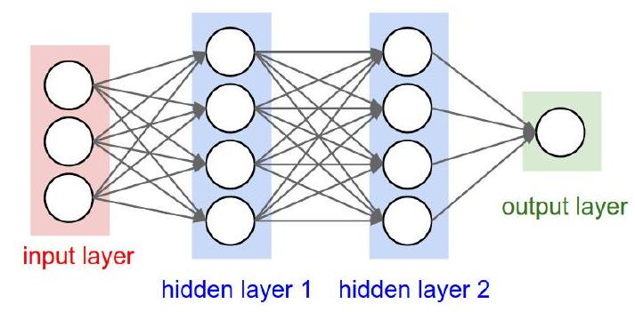
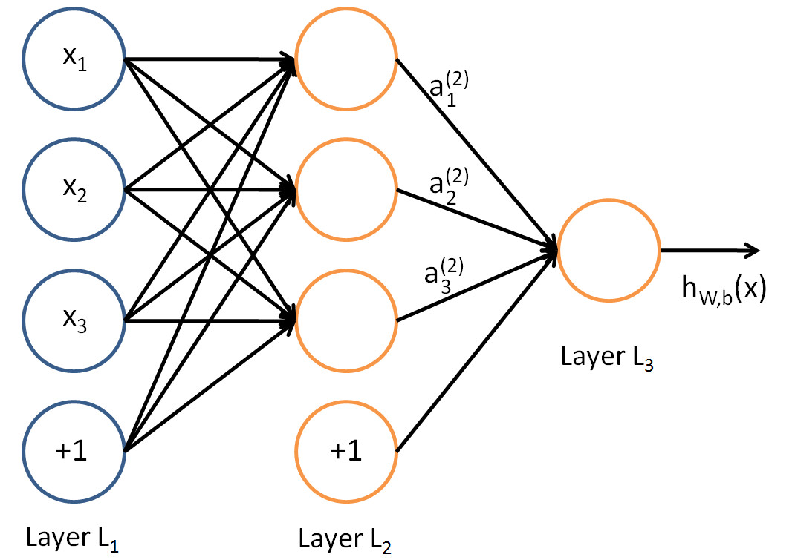

knitr::include_graphics("images/AI-ML-DL-1.jpg")
Today, in April 2023, our world is convulsed by the explosion of Artificial Intelligence.
It has probably been in the last months (weeks), since ChatGPT has arrived, that everybody has an opinion, or a fear on the topic.

AI use statistical learning methods, such as machine learning algorithms, to make predictions based on large amounts of data.
Prediction is a fundamental capability of AI and is used in a wide range of applications.
However, it is important to keep in mind that AI has far-reaching implications beyond its predictive capabilities, including ethical, social or technological.
Deep learning is a successful AI model which has powered many application such as self-driving cars, voice assistants, and medical diagnosis systems.
Essentially, deep learning extends the basic principles of artificial neural networks by
We won’t delve into the history of ANN, but a quick look at it may help fully grasp its current capabilities.

We can see several hints worth to account for:
The Perceptron and the first Artificial Neural Network where the basic building block was introduced.
The Multilayered perceptron and back-propagation where complex architectures were suggested to improve the capabilities.
Deep Neural Networks, with many hidden layers, and auto-tunability capabilities.
 Source: Alex Amini’s ‘MIT Introduction to Deep Learning’ course (introtodeeplearning.com)
Success stories such as
the development of self-driving cars,
the use of AI in medical diagnosis, and
the creation of personalized recommendations in online shopping
have also contributed to the widespread adoption of AI.
knitr::include_graphics("images/AI-ML-DL-1.jpg")
Artificial intelligence: Ability of a computer to perform tasks commonly associated with intelligent beings.
Machine learning: study of algorithms that learn from examples and experience instead of relying on hard-coded rules and make predictions on new data
Deep learning: sub field of ML focusing on learning data representations as successive successive layers of increasingly meaningful representations.
knitr::include_graphics("images/ML_vs_DL-2.png")

Near-human-level image classification
Near-human-level speech transcription
Near-human-level handwriting transcription
Dramatically improved machine translation
Dramatically improved text-to-speech conversion
Digital assistants such as Google Assistant and Amazon Alexa
Near-human-level autonomous driving
Improved ad targeting, as used by Google, Baidu, or Bing
Improved search results on the web
Ability to answer natural language questions
Superhuman Go playing
According to F. Chollet, the developer of Keras,
The perceptron, was introduced in the 50’s (one version of the perceptron at least), as a mathematical model that might emulate a neuron.
The idea was trying to produce a model that, given some inputs, and an appropriate set of examples, learn to produce the desired output.

See the source of this picture for an illustration on how this can be used to emulate logical operations such as AND, OR or NOT, but not XOR.
This first attempt to emulate neurons succeeded but with limitations:
What about non-Boolean (say, real) inputs?
What if all inputs are not equal?
What if we want to assign more importance to some inputs?
What about functions which are not linearly separable? Say XOR function
To overcome these limitations Frank Rosenblatt, proposed the classical perception model, the artificial neuron, in 1958.
It is more generalized computational model than the McCullough-Pitts neuron where weights and thresholds can be learnt over time.
Rosenblatt’s perceptron is very similar to an M-P neuron but


This is an improvement because
But there is still a drawback in that a single perceptron can only be used to implement linearly separable functions.
Artificial Neural Networks improve on this by introducing Activation Functions
knitr::include_graphics("images/ActivationFunction0.png")
With all these ideas in mind we can now define an Artificial Neuron as a computational unit that :
takes as input \(x=(x_0,x_1,x_2,x_3)\) (\(x_0\) = +1, called bias),
outputs \(h_{\theta}(x) = f(\theta^\intercal x) = f(\sum_i \theta_ix_i)\),
where \(f:\mathbb{R}\mapsto \mathbb{R}\) is called the activation function.
Goal of activation function is to provide the neuron with the capability of producing the required outputs.
Flexible enough to produce
Usually chosen from a (small) set of possibilities.
tanh, function\[ f(z)=\frac{1}{1+e^{-z}} \]
Output real values \(\in (0,1)\).
Natural interpretations as probability of an event
vanishing gradient problem
Its derivative is: \(f'(z)=f(z)(1-f(z))\).
knitr::include_graphics("images/SigmoidFunction.png")
Also called tanh, function:
\[ f(z)=\frac{e^{z}-e^{-z}}{e^{z}+e^{-z}} \]
outputs are zero-centered and bounded in −1,1
scaled and shifted Sigmoid
stronger gradient but still has vanishing gradient problem
Its derivative is \(f'(z)=1-(f(z))^2\).
knitr::include_graphics("images/TanhFunction.png")
rectified linear unit: \(f(z)=\max\{0,z\}\).
Close to a linear: piece-wise linear function with two linear pieces.
Outputs are in %(0,)$ , thus not bounded
Half rectified: activation threshold at 0
No vanishing gradient problem
knitr::include_graphics("images/ReLUFunction.png")
 .
.
knitr::include_graphics("images/ArtificialNeuron.png")
\(\Sigma=\left\langle w_{j}, x\right\rangle+ b_{j}\)
knitr::include_graphics("images/MultiLayer1.png")
Multilayers perceptrons have a basic architecture:
This basic architecture can changes in many possible ways
The architecture of a multilayer perceptron is defined by:
Activation functions are important in the definition of the ANN, but not relevant for the architecture.
\[ \operatorname{softmax}(z)_{i}=\frac{\exp \left(z_{i}\right)}{\sum_{j} \exp \left(z_{j}\right)} \]
We use the neuralnet package to build a simple neural network to predict if a type of stock pays dividends or not.
if (!require(neuralnet))
install.packages("neuralnet", dep=TRUE)Loading required package: neuralnetAnd use the dividendinfo.csv dataset from https://github.com/MGCodesandStats/datasets
mydata <- read.csv("https://raw.githubusercontent.com/MGCodesandStats/datasets/master/dividendinfo.csv")
str(mydata)'data.frame': 200 obs. of 6 variables:
$ dividend : int 0 1 1 0 1 1 1 0 1 1 ...
$ fcfps : num 2.75 4.96 2.78 0.43 2.94 3.9 1.09 2.32 2.5 4.46 ...
$ earnings_growth: num -19.25 0.83 1.09 12.97 2.44 ...
$ de : num 1.11 1.09 0.19 1.7 1.83 0.46 2.32 3.34 3.15 3.33 ...
$ mcap : int 545 630 562 388 684 621 656 351 658 330 ...
$ current_ratio : num 0.924 1.469 1.976 1.942 2.487 ...normalize <- function(x) {
return ((x - min(x)) / (max(x) - min(x)))
}
normData <- as.data.frame(lapply(mydata, normalize))Finally we break our data in a test and a training set:
perc2Train <- 2/3
ssize <- nrow(normData)
set.seed(12345)
data_rows <- floor(perc2Train *ssize)
train_indices <- sample(c(1:ssize), data_rows)
trainset <- normData[train_indices,]
testset <- normData[-train_indices,]We train a simple NN with two hidden layers, with 4 and 2 neurons respectively.
#Neural Network
library(neuralnet)
nn <- neuralnet(dividend ~ fcfps + earnings_growth + de + mcap + current_ratio,
data=trainset,
hidden=c(2,1),
linear.output=FALSE,
threshold=0.01)The output of the procedure is a neural network with estimated weights
plot(nn, rep = "best")temp_test <- subset(testset, select =
c("fcfps","earnings_growth",
"de", "mcap", "current_ratio"))
nn.results <- compute(nn, temp_test)
results <- data.frame(actual =
testset$dividend,
prediction = nn.results$net.result)
head(results) actual prediction
9 1 0.9919213885
19 1 0.9769206123
22 0 0.0002187144
26 0 0.6093330933
27 1 0.7454164893
29 1 0.9515431416roundedresults<-sapply(results,round,digits=0)
roundedresultsdf=data.frame(roundedresults)
attach(roundedresultsdf)
table(actual,prediction) prediction
actual 0 1
0 33 3
1 4 27An ANN is a predictive model whose functioning and properties can be mathematically characterized.
In practice this means describing
knitr::include_graphics("images/nn.jpg")
This ANN can be seen as a logistic regression model:
From input layer to layer 2: non-linear transformation –> new set of complex features.
From layer 2 to output layer use a sigmoid activation function to produce the following output from the set of complex features.
\[ \mbox{The output is: }h_{\theta}(x)=\frac{1}{1+e^{-\theta^\intercal x}} \]
Recall that, the logistic regression model is:
\[ \log\frac{p(Y=1|x)}{1-p(Y=1|x)}=\theta^\intercal x \]
Isolating \(p(Y=1|x)\) and taking logs in both sides, we have:
\[ \frac{p(Y=1|x)}{1-p(Y=1|x)}=e^{\theta^\intercal x} \]
\[ p(Y=1|x)=\frac{e^{\theta^\intercal x}}{1+e^{\theta^\intercal x}}=\frac{1}{1+e^{-\theta^\intercal x}} \]
That is: when the activation function of the output node is the sigmoid activation function, the output coincides with a logistic regression on complex features
And, with \(h_{\theta}(x)\), the output of the NN, we are estimating \(p(Y=1|x)\).
Thus, in our example, we have:
Note that bias units don’t have inputs or connections going into them, since they always output the value +1.
We also let \(s_l\) denote the number of nodes in layer \(l\) (not counting the bias unit).
Now, write \(a^{(l)}_i\) to denote the activation (meaning output value) of unit \(i\) in layer \(l\).
Given a fixed setting of the parameters \(\Theta\), our neural network defines a model \(h_{\Theta}(x)\) that outputs a real number.
We can now see how these weights are used to produce the output: \[\begin{eqnarray} a_1^{(2)}&=&f(\theta_{10}^{(1)}+\theta_{11}^{(1)}x_1+\theta_{12}^{(1)}x_2+\theta_{13}^{(1)}x_3)\\ a_2^{(2)}&=&f(\theta_{20}^{(1)}+\theta_{21}^{(1)}x_1+\theta_{22}^{(1)}x_2+\theta_{23}^{(1)}x_3)\\ a_3^{(2)}&=&f(\theta_{30}^{(1)}+\theta_{31}^{(1)}x_1+\theta_{32}^{(1)}x_2+\theta_{33}^{(1)}x_3)\\ h_{\Theta}(x)&=&a_1^{(3)}=f(\theta_{10}^{(2)}+\theta_{11}^{(2)}a_1^{(2)}+\theta_{12}^{(2)}a_2^{(2)}+\theta_{13}^{(2)}a_3^{(2)}) \end{eqnarray}\]
Now, letting \(z_i^{(l)}\) denote the total weighted sum of inputs to unit \(i\) in layer \(l\), including the bias term \[z_i^{(2)}=\theta_{i0}^{(1)}+\theta_{i1}^{(1)}x_1+\theta_{i2}^{(1)}x_2+\theta_{i3}^{(1)}x_3, \] the output becomes: \(a_i^{(l)}=f(z_i^{(l)})\).
Note that this easily lends itself to a more compact notation.
Extending the activation function \(f(\cdot)\) to apply to vectors in an element-wise fashion: \[ f([z_1,z_2,z_3]) = [f(z_1), f(z_2),f(z_3)], \]
then we can write the previous equations more compactly as:
\[\begin{eqnarray} z^{(2)}&=&\Theta^{(1)}x\nonumber\\ a^{(2)}&=&f(z^{(2)})\nonumber\\ z^{(3)}&=&\Theta^{(2)}a^{(2)}\nonumber\\ h_{\Theta}(x)&=&a^{(3)}=f(z^{(3)})\nonumber \end{eqnarray}\]More generally, recalling that we also use \(a^{(1)}=x\) to also denote the values from the input layer,
then given layer \(l\)’s activations \(a^{(l)}\), we can compute layer \(l+1\)’s activations \(a^{(l+1)}\) as:
\[ z^{(l+1)}= \begin{bmatrix} z_1^{(l+1)}\\ z_2^{(l+1)}\\ \vdots\\ z_{s_{l+1}}^{(l)} \end{bmatrix}= \begin{bmatrix} \theta_{10}^{(l)}& \theta_{11}^{(l)}&\theta_{12}^{(l)}&...&\theta_{1s_{l}}^{(l)}&\\ \theta_{20}^{(l)}& \theta_{21}^{(l)}&\theta_{22}^{(l)}&...&\theta_{2s_{l}}^{(l)}&\\ \vdots & \vdots& \vdots & \vdots & \vdots\\ \theta_{s_{l+1}0}^{(l)}& \theta_{s_{l+1}1}^{(l)}&\theta_{s_{l+1}2}^{(l)}&...&\theta_{s_{l+1}s_{l}}^{(l)}&\\ \end{bmatrix} \cdot\begin{bmatrix} 1\\ a_1^{(l)}\\ a_2^{(l)}\\ \vdots\\ a_{s_l}^{(l)} \end{bmatrix} \]
The activation is then:
\[ a^{(l+1)}= \begin{bmatrix} a_1^{(l+1)}\\ a_2^{(l+1)}\\ \vdots\\ a_{s_{l+1}}^{(l)} \end{bmatrix}=f(z^{(l+1)})=\begin{bmatrix} f(z_1^{(l+1)})\\ f(z_2^{(l+1)})\\ \vdots\\ f(z_{s_{l+1}}^{(l)}) \end{bmatrix} \]
By organizing our parameters in matrices
and using matrix-vector operations,
we can take advantage of fast linear algebra routines to
quickly perform calculations in our network.
This process is called forward propagation.
We have so far focused on a single hidden layer neural network of the example
One can build neural networks with many distinct architectures (meaning patterns of connectivity between neurons), including ones with multiple hidden layers.
In order to estimate the weights we will aim at minimizing an appropriate loss function.
A first idea may be to use squared error loss \[ l(h_\theta(x),y)=(y-\frac{1}{1+e^{-\theta^\intercal x}})^2 \]
However it happens to be that this is is not a convex problem which means that MSE is not appropriate.
\[ l(h_\theta(x),y)=-y\log h_\theta(x) - (1-y)\log(1-h_\theta(x)) \]
Let \(\nabla J(\theta)\in\mathbb{R}^p\) be the vector of partial derivatives, aka the gradient: \[\begin{equation}\label{g1} \nabla J(\theta)=\big(\frac{\partial J(\theta)}{\partial\theta_1},...,\frac{\partial J(\theta)}{\partial\theta_p}\big)^\intercal, \mbox{then:} \end{equation}\] \[\begin{equation}\label{g2} J(\theta+\Delta\theta)\approx J(\theta)+\nabla J(\theta)^\intercal\Delta\theta \end{equation}\]
Our aim is to reduce the value of the cost function.
It seems reasonable to choose \(\Delta\theta\) (a direction) to make \(\nabla J(\theta)^\intercal\Delta\theta\) as negative as possible.
So *the most negative that \(f^\intercal g\) can be is \(-||f||\cdot||g||\),
This happens when \(f=-g\).
Hence *we should choose \(\Delta\theta\) to lie in the direction of \(-\nabla J(\theta)\).
Keeping in mind that this approximation is relevant only for small \(\Delta\theta\), we will limit ourselves to a small step in that direction.
This leads to the update \[\begin{equation}\label{g3} \theta \rightarrow \theta-\eta\nabla J(\theta) \end{equation}\]
\(\eta\) is small step size known as the learning rate.
This equation defines the steepest descent method.
We choose an initial vector and iterate
\[ \theta_j=\theta_j-\eta\frac{\partial}{\partial\theta_j}J(\theta) \]
\[ \qquad \textrm{and simultaneously update all }\qquad \theta_j \]
\(\eta\in (0,1]\) denotes the learning parameter.
\[ \underset{\theta}{\textrm{min }}J(\theta) \]
A much cheaper alternative is to replace the mean of the individual gradients over all training points
by the gradient at a single, randomly chosen, training point.
This leads to the simplest form of the stochastic gradient method.
Choose an integer \(i\) uniformly at random from \(\{1,...,n\}\) and update \[\begin{equation}\label{g4} \theta_j=\theta_j-\eta\frac{\partial}{\partial\theta_j}J(\theta;x^{(i)}) \end{equation}\]
Notice we have included \(x^{(i)}\) in the notation of \(J(\theta;x^{(i)})\) to remark the dependence.
-At each step, the stochastic gradient method uses one randomly chosen training point to represent the full training set.
As the iteration proceeds, the method sees more training points.
So there is some hope that this dramatic reduction in cost-per-iteration will be worthwhile overall.
Note that, even for very small \(\eta\), the update (\(\ref{g4}\)) is not guaranteed to reduce the overall cost function we have traded the mean for a single sample.
Hence, although the phrase stochastic gradient descent is widely used, we prefer to use stochastic gradient.
In this paper, the authors presents a new method capable to change the predictions towards a desired output, they called it the delta rule.
This rule consist in compute the total error for the network and check how the error changes when certain elements from the network changes its value.
These changes are computed by differentiating the cost function with regard to each element in the network
Which would give us a measure of how much each element is contributing to the total error of the network,
This is, computing the gradient of the cost function we can know how the total error changes with regard to each element, and therefore apply the delta rule.
-It contains two main phases referred to as the forward phase and backward phase: